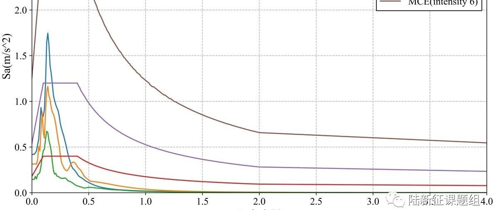

RED-ACT Report: 0424, M4.8 New Zealand Dannevirke Earthquake
RED-ACT Report
Real-time Earthquake Damage Assessment using City-scale Time-history analysis
Apr. 24, M4.8 New Zealand Dannevirke Earthquake
Research group of Xinzheng Lu at Tsinghua University ([email protected])
First reported at 14:00, Apr. 25, 2019 (Beijing Time, UTC +8)
Acknowledgments and Disclaimer
The authors are grateful for the data provided by GeoNet. This analysis is for research only. The actual damage resulting from the earthquake should be determined according to the site investigation.
Scientific background of this report can be found at:
http://www.luxinzheng.net/software/Real-Time_Report.pdf
1. Introduction to the earthquake event
At Apr 24 2019 4:37 (Local Time), an M 4.8 (GeoNet) earthquake occurred in New Zealand Dannevirke. The epicenter was located at 175.97 -40.26, with a depth of 25.0 km.
2. Recorded ground motions
33 ground motions near to epicenter of this earthquake were analyzed. The names and locations of the stations can be found Table 1. The maximal recorded peak ground acceleration (PGA) is 42 cm/s/s. The corresponding response spectra in comparison with the design spectra specified in the Chinese Code for Seismic Design of Buildings are shown in Figure 1.

Figure 1 Response spectra of the recorded ground motions with maximal PGA
3. Damage analysis of the target region subjected to the recorded ground motions
Using the real-time ground motions obtained from the strong motion networks and the city-scale nonlinear time-history analysis (see the Appendix of this report), the damage ratios of buildings located in different places can be obtained. The building damage distribution and the human uncomfortableness distribution near to different stations is shown in Figure 2 and Figure 3, respectively. These outcomes can provide a reference for post-earthquake rescue work.

Figure 2 Damage ratio distribution of the buildings near to different stations

Figure 3 Human uncomfortableness distribution near to different stations
Scientific background of this report can be found at: http://www.luxinzheng.net/software/Real-Time_Report.pdf
Table 1 Names and locations of the strong motion stations
No. Station Name Longitude Latitude
1 20190423_163716_TSZ_20 175.9611 -40.0586
2 20190423_163716_WDPS_20 175.8697 -40.3383
3 20190423_163720_MNGS_20 175.7908 -39.8078
4 20190423_163720_TRMS_20 175.9911 -40.6714
5 20190423_163721_MRZ_20 175.5786 -40.6606
6 20190423_163721_PGFS_20 176.6117 -40.3022
7 20190423_163722_WPWS_20 176.5844 -39.9439
8 20190423_163724_CPFS_20 176.2208 -40.8989
9 20190423_163725_WRCS_20 175.6478 -40.9503
10 20190423_163726_WCDS_20 175.0481 -39.9336
11 20190423_163728_HNPS_20 176.88 -39.6711
12 20190423_163728_PAPS_20 175.005 -40.9144
13 20190423_163728_WAZ_20 174.9856 -39.7547
14 20190423_163729_UHCS_20 175.0408 -41.1269
15 20190423_163730_NGHS_20 176.915 -39.4858
16 20190423_163731_BMTS_20 174.9261 -41.1914
17 20190423_163731_INSS_20 174.9211 -41.2336
18 20190423_163731_PHHS_20 174.9042 -41.2522
19 20190423_163731_WANS_20 174.9311 -41.2311
20 20190423_163732_PTOS_20 174.8603 -41.2231
21 20190423_163732_SOMS_20 174.865 -41.2575
22 20190423_163733_MISS_20 174.8183 -41.315
23 20190423_163733_POTS_20 174.7747 -41.2722
24 20190423_163733_WDAS_20 174.9483 -41.2575
25 20190423_163733_WEL_20 174.7681 -41.2842
26 20190423_163733_WEMS_20 174.7792 -41.2742
27 20190423_163735_PWES_20 174.8258 -41.1275
28 20190423_163740_MTHZ_20 176.8411 -38.8522
29 20190423_163741_TEPS_20 174.7811 -41.2906
30 20190423_163741_TPPS_21 176.0675 -38.6864
31 20190423_163743_RTZ_20 176.9806 -38.6156
32 20190423_163747_NCDS_20 176.8761 -39.4983
33 20190423_163749_TLZ_20 175.5381 -38.3294
---End---
相关研究
长按识别二维码，关注我们的科研动态